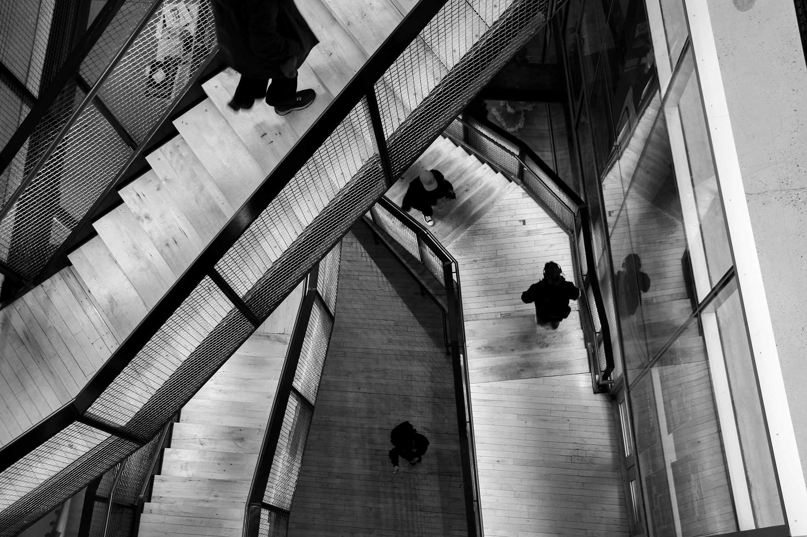
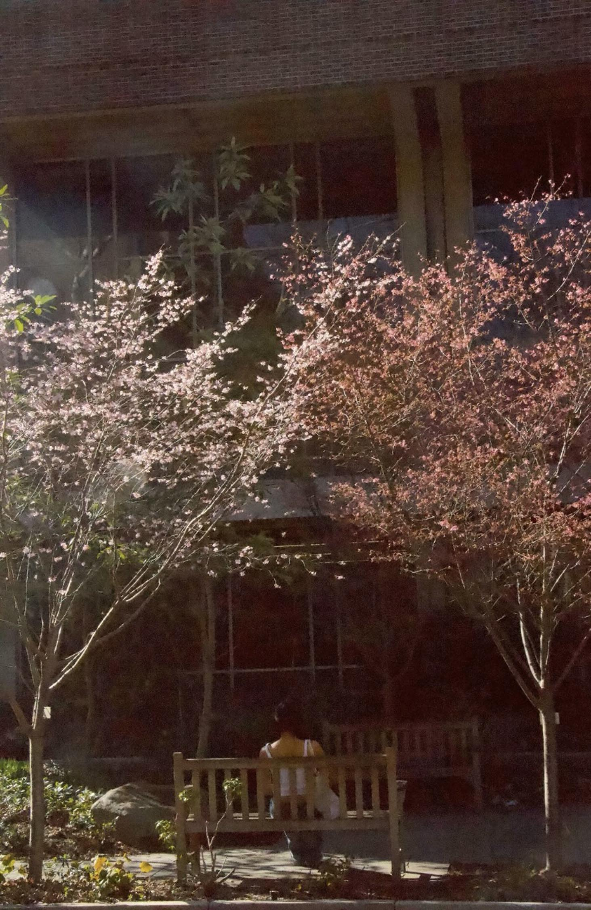

As my personal favorite medium to work with, I've realized since I started that it has helped me observe the world we live in more and taking in the natural forms of design that exist in the sturctures we're surrounded in
collectives

Black & White Study
What happens when color is fully stripped from an image?
Shot on a Canon EOS Rebel T5i DSLR

Humans and Nature
What happens when humans come to appreciate the nature around them?
Shot on a Canon PowerShot A2300 HD